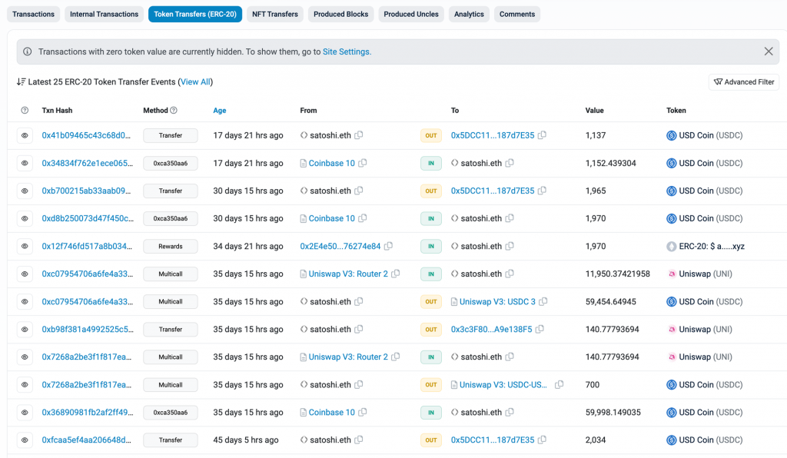
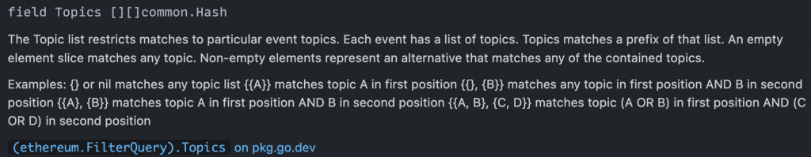
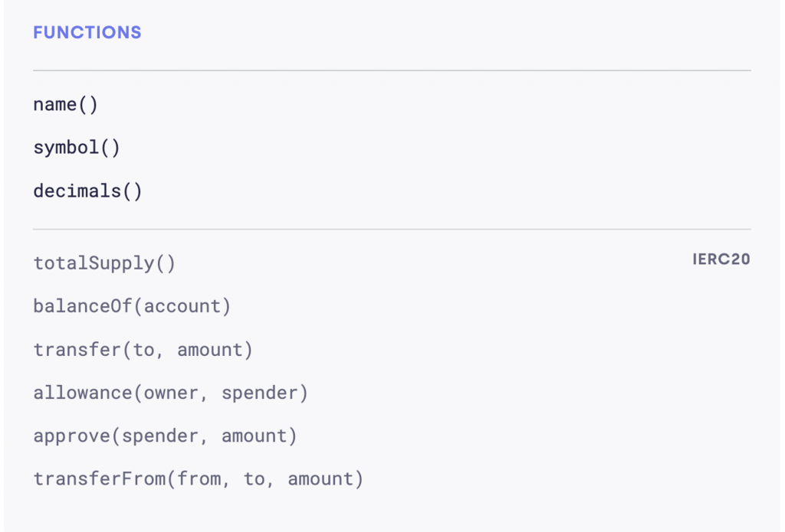
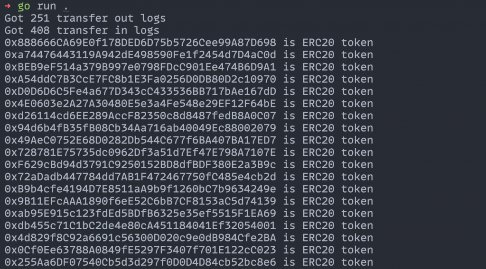
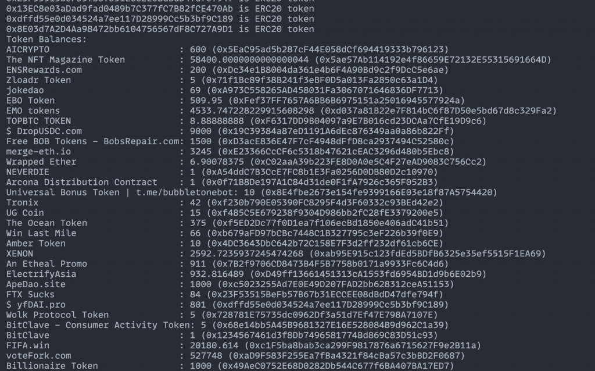
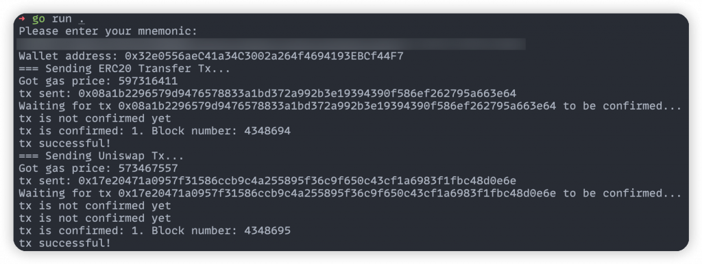
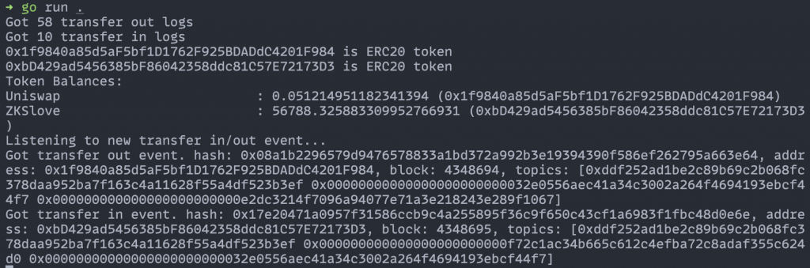

今天要來實作的是直接查詢鏈上資料來組合出一個地址的完整 ERC-20 Balance，並且即時偵測該地址在鏈上的 Token Balance 變動。這樣的功能將等於是在 Day 10 中使用的第三方 API 功能，通過實作這功能，我們將更深入了解 Debank、Metamask Portfolio 等資產管理工具背後的機制及挑戰。
在 Day 15 已經深入探討了 Event Logs 的概念。為了計算出完整的 ERC-20 Balance，我們只需取得該地址過去所有的 Token Transfer Event 並對其做加總即可。以 satoshi.eth 作為今日的實作範例，目標是要找出該地址在 Ethereum 主網上的所有 ERC-20 Balance。
首先回顧一下 Transfer Event 的結構，它的 Topic 0 是
keccak256("Transfer(address,address,uint256)")，Topic 1 與
Topic 2 則分別是代幣轉移的 from 與 to
address。所以需要分別查詢匹配轉入和轉出條件的 Event
Logs，再將它們組合起來。
值得注意的是這些資料會對應到 Etherscan 上的 Token Transfer Tab，可以發現其實 Etherscan 也是採用同樣的方式來呈現 ERC-20 Token 的轉帳紀錄。

在取得 Event Logs 之前，需要先連接到 Ethereum 主網的 Alchemy RPC Node：
[code] // connect to json rpc node client, err := ethclient.Dial(“wss://eth-sepolia.g.alchemy.com/v2/” + os.Getenv(“ALCHEMY_API_KEY”)) if err != nil { log.Fatal(err) }
[/code]
有了 client 後，就可以使用
client.FilterLogs 方法分別取得轉入和轉出的所有 Logs：
[code] const transferEventSignature = “Transfer(address,address,uint256)”
// transfer out filter query
transferEventSignatureHash := crypto.Keccak256Hash([]byte(transferEventSignature))
transferOutQuery := ethereum.FilterQuery{
Addresses: []common.Address{},
Topics: [][]common.Hash{
{transferEventSignatureHash},
{common.HexToHash(targetAddress)},
{},
},
}
transferOutLogs, err := client.FilterLogs(context.Background(), transferOutQuery)
if err != nil {
log.Fatalf("Failed to retrieve logs: %v", err)
}
fmt.Printf("Got %d transfer out logs\n", len(transferOutLogs))
// transfer in filter query
transferInQuery := ethereum.FilterQuery{
Addresses: []common.Address{},
Topics: [][]common.Hash{
{transferEventSignatureHash},
{},
{common.HexToHash(targetAddress)},
},
}
transferInLogs, err := client.FilterLogs(context.Background(), transferInQuery)
if err != nil {
log.Fatalf("Failed to retrieve logs: %v", err)
}
fmt.Printf("Got %d transfer in logs\n", len(transferInLogs))[/code]
由於我們想拿到所有 ERC-20 Token Contract 發出的 Event，所以 Addresses 欄位需要填入空陣列，他代表想查詢哪些合約地址發出的 Event Log。再來比較有趣的是 Topics 欄位的值，他是一個二維陣列，可以看一下定義：

可以看到這個結構能方便指定像這樣的過濾條件：Topic 0 為
A or B 且 Topic 1 為 C or D
。這樣的好處是能在一次 API Call 中拿到多種類的 Event Log（例如我同時想拿
Transfer 跟 Approve event 的 logs，就可以在
Topic 0 指定兩個值）。而如果在那個位子不指定的話就放入空陣列即可。
這個取得 Event Log 的功能背後其實是打 eth_getLogs 這個
RPC Method，裡面的 topics 參數就提供了這種查詢方式，詳細可以看 Alchemy
的 eth_getLogs
文件。
拿到這些 Logs 之後，還有一個需要注意的細節，因為這個過濾方式可能還會包含一些不是 ERC-20 Token Transfer 的 Event Log。像 ERC-721 的 Transfer Event 定義如下：
[code] event Transfer(address indexed from, address indexed to, uint256 indexed tokenId)
[/code]
可以發現他的 Event Signature（也就是 Log 中的 Topic 0）跟 ERC-20
Transfer 是一樣的，都是
keccak256(”Transfer(address,address,uint256)”)，唯一差別是在
ERC-721 Event 的第三個欄位紀錄的是 Token ID，並且他有被
indexed。因此能區分出這兩種 Log 的方式就是 Topics 數量，後續在針對每筆
Log 處理時就要 Filter 掉 Topics 數量不為 3 的 Log。
有了所有轉入跟轉出的 Logs，就可以開始對這些 Logs 進行解析，確定每一筆 Log 代表的 Token 轉移數量，並按照發出該 Log 的 Token Contract Address 去計算該地址的總轉入與總轉出，進而算出他在對應 Token Contract 的餘額。
回顧一下轉移的 Token 數量會被記錄在 Log 的 Data 欄位中，因為他沒有被
indexed，而要從原始的 Log Topics 以及 Data
去解析出需要的資料是比較繁瑣的處理，因此這裡可以善用 ERC-20 的 Go
Binding 裡面提供的 ParseTransfer() ，可以方便解析出
Transfer Event 中的資料：
[code] // get an arbitrary erc20 binding erc20Token, err := erc20.NewErc20(common.HexToAddress(“0x0000000000000000000000000000000000000000”), client) if err != nil { log.Fatalf(“Failed to bind to erc20 contract: %v”, err) }
// When parsing a log
transferEvent, err := erc20Token.ParseTransfer(vLog)
if err != nil {
log.Fatalf("Failed to unmarshal Transfer event: %v", err)
}
// We can use transferEvent.From, transferEvent.To, transferEvent.Value now[/code]
有了這些工具後就能順利解析所有的 Logs。為了方便處理可以先合併
Transfer In 跟 Out 的 Logs，並且用一個 map[string]*big.Int
來追蹤該地址在每個 Token Contract 的餘額：
[code] // calculate token balances allLogs := append(transferInLogs, transferOutLogs…) tokenBalances := make(map[string]*big.Int) for _, vLog := range allLogs { // check if the log is ERC-20 Transfer event if len(vLog.Topics) != 3 { continue } contractAddress := vLog.Address.Hex()
// update token balance
transferEvent, err := erc20Token.ParseTransfer(vLog)
if err != nil {
log.Fatalf("Failed to unmarshal Transfer event: %v", err)
}
if transferEvent.From != transferEvent.To {
if _, ok := tokenBalances[contractAddress]; !ok {
tokenBalances[contractAddress] = big.NewInt(0)
}
if vLog.Topics[1] == common.HexToHash(targetAddress) {
tokenBalances[contractAddress] = tokenBalances[contractAddress].Sub(tokenBalances[contractAddress], transferEvent.Value)
} else {
tokenBalances[contractAddress] = tokenBalances[contractAddress].Add(tokenBalances[contractAddress], transferEvent.Value)
}
}
}[/code]
這樣就可以得到初步的 Token Balance 結果了。但這還不夠精準，必須考慮一個重要的問題：這個合約地址是否真的是一個 ERC-20 Token。
要判斷一個合約地址是否為 ERC-20，可以參考 OpenZeppelin 的文件，回顧一下 ERC-20 合約應該有哪些介面：

因為要支援所有這些介面才能算是 ERC-20
合約，最直觀的判斷方式就是對每個 function
都嘗試呼叫一次這個合約試試看，如果都得到正常的回覆就代表這個合約有實作對應的
function。如果合約不支援該方法，通常會得到一個
execution reverted 的
error。因此這樣就能判斷出他是否（很可能）是 ERC-20 Token。
以下 function 檢查了 ERC-20 的部分方法，並回傳 Token 的 name 和 decimals 來方便後續顯示結果時使用：
[code] // getNameAndDecimals get name and decimals if contract is ERC20 token. Otherwise, return error. func getNameAndDecimals(client *ethclient.Client, address common.Address) (name string, decimals uint8, err error) { erc20Token, err := erc20.NewErc20(address, client) if err != nil { return } name, err = erc20Token.Name(nil) if err != nil || name == “” { return } symbol, err := erc20Token.Symbol(nil) if err != nil || symbol == “” { return } totalSupply, err := erc20Token.TotalSupply(nil) if err != nil || totalSupply.Cmp(big.NewInt(0)) == 0 { return } decimals, err = erc20Token.Decimals(nil) if err != nil || decimals == 0 { return } _, err = erc20Token.BalanceOf(nil, common.HexToAddress(“0x0000000000000000000000000000000000000000”)) if err != nil { return } fmt.Printf(“%s is ERC20 token”, address.Hex()) return }
[/code]
這裡只有嘗試呼叫部分方法，是因為像 transfer function
如果在 from 地址沒有該 Token
時也會執行失敗，導致無法判斷出錯的原因是來自於合約不支援 transfer
function 還是地址餘額不足。
然而此判斷方法並不太有效率，因為要做很多次的鏈上查詢，而且結果也不一定是
100% 準確。不過幸好在許多新的合約標準中會支援 ERC-165 的
supportsInterface()
方法，可以迅速確定一個合約是否支援某個特定的 interface。例如， RC-721 和
ERC-1155 都已經要求合約要實作這個 function（範例），但因為
ERC-20 是早期標準，許多早期部署的 ERC-20 Token Contracts 都沒有支援
ERC-165，因此只能用比較低效率的方法判斷。
一個典型的 ERC-721 合約 supportsInterface
的實作如下：
[code] bytes4 constant InterfaceID_ERC165 = bytes4(keccak256(‘supportsInterface(bytes4)’));
bytes4 constant InterfaceID_ERC721 =
bytes4(keccak256('name()')) ^
bytes4(keccak256('symbol()')) ^
bytes4(keccak256('totalSupply()')) ^
bytes4(keccak256('balanceOf(address)')) ^
bytes4(keccak256('ownerOf(uint256)')) ^
bytes4(keccak256('approve(address,uint256)')) ^
bytes4(keccak256('transfer(address,uint256)')) ^
bytes4(keccak256('transferFrom(address,address,uint256)')) ^
bytes4(keccak256('tokensOfOwner(address)'));
function supportsInterface(bytes4 _interfaceID) external view returns (bool) {
return ((_interfaceID == InterfaceID_ERC165) || (_interfaceID == InterfaceID_ERC721));
}[/code]
可以看到 ERC-721 有一個固定的 interface ID，是由所有包含的 function
signature hash 而來。只需使用此 ID 去呼叫合約的
supportsInterface，即可確定該合約是否支援 ERC-721
標準了。此方法也可用來檢查一個合約是否有支援任何其他
interface，只要它符合 ERC-165 標準即可。
有了以上知識就可以完成 ERC-20 Token Balance 的程式碼，並把結果輸出。為了豐富輸出結果，程式碼中還加上了輸出 Token Name 以及搭配 Decimals 算出可讀的 Balance 資料。另外因為查詢一個合約地址是否是 ERC-20 會花費比較多時間，可以搭配一個 map 紀錄已查詢過的地址結果：
[code] isERC20Contract := make(map[string]bool) for _, vLog := range allLogs { // … // check if the contract is ERC20 token contract contractAddress := vLog.Address.Hex() if val, ok := isERC20Contract[contractAddress]; ok && !val { // already checked and not ERC20 token contract continue }
// get token data
if _, ok := tokens[contractAddress]; !ok {
name, decimals, err := getNameAndDecimals(client, vLog.Address)
if err != nil {
// not ERC20 token contract
isERC20Contract[contractAddress] = false
continue
}
isERC20Contract[contractAddress] = true
tokens[contractAddress] = struct {
name string
decimals uint8
}{name, decimals}
}
// update token balance
// ...
}
// print token balances
fmt.Println("Token Balances:")
for contractAddress, balance := range tokenBalances {
if balance.Cmp(big.NewInt(0)) == 0 {
continue
}
balanceStr := decimal.NewFromBigInt(balance, -int32(tokens[contractAddress].decimals))
fmt.Printf("%-32s: %s (%s)\n", tokens[contractAddress].name, balanceStr, contractAddress)
}[/code]
裡面還用到 decimal
package 來計算 big.Int
的除法。跑起來的結果如下（只截取部分）：


讀者可以把這個結果跟 Etherscan 的 Token Holdings 頁面比較，會發現大部分是吻合的。但還是會有少部分奇怪的結果，例如以下這筆是負的值：
[code] USD Coin (USDC). : -2000 (0x8E03d7A2D4Aa98472bb6104756567dF8C727A9D1)
[/code]
這其實是因為他是假的
USDC 合約，他內部的邏輯允許了就算餘額是 0 還是能觸發 Transfer
event，因為他只要在 transfer 前不去檢查 from
地址的餘額就好了。這種合約雖然有實作需要的 ERC-20
function，但實作方式並不符合 ERC-20
要達到的效果。若要更嚴謹的把這種合約過濾掉，可以再加上去查詢目標地址呼叫這個合約的
balanceOf
判斷是否跟計算出來的值符合，有的話才代表合約中有好好維護一個地址 Token
Balance 的變化。
我們已經能拿到一個地址當下的所有 ERC-20 Token Balance，接下來只要能監聽鏈上關於目標地址的所有新 Token Transfer Log，就能即時更新他的 Token Balance。為了展示這個功能，首先把目標地址跟鏈換成我的 Sepolia 地址，並且在連接 RPC Node 時要用 Web Socket 連線才有監聽的功能：
[code] const targetAddress = “0x32e0556aeC41a34C3002a264f4694193EBCf44F7”
// connect to json rpc node
client, err := ethclient.Dial("wss://eth-sepolia.g.alchemy.com/v2/" + os.Getenv("ALCHEMY_API_KEY"))
if err != nil {
log.Fatal(err)
}[/code]
再來就可以用 client.SubscribeFilterLogs
搭配前面已經定義過的 transferOutQuery 和
transferInQuery 來即時接收符合這兩個 Filter 的 Log：
[code] // listen to new transfer in/out event fmt.Println(“Listening to new transfer in/out event…”) transferOutChan := make(chan types.Log) transferOutSub, err := client.SubscribeFilterLogs(context.Background(), transferOutQuery, transferOutChan) if err != nil { log.Fatalf(“Failed to subscribe to transfer out event: %v”, err) } transferInChan := make(chan types.Log) transferInSub, err := client.SubscribeFilterLogs(context.Background(), transferInQuery, transferInChan) if err != nil { log.Fatalf(“Failed to subscribe to transfer in event: %v”, err) }
for {
// wait for new transfer event
var newLog types.Log
select {
case err := <-transferOutSub.Err():
log.Fatalf("Failed to receive transfer out event: %v", err)
case err := <-transferInSub.Err():
log.Fatalf("Failed to receive transfer in event: %v", err)
case newLog = <-transferOutChan:
fmt.Printf("Got transfer out event. hash: %s, address: %s, block: %d, topics: %+v\n", newLog.TxHash, newLog.Address, newLog.BlockNumber, newLog.Topics)
// we can get the token name and decimals, then update token balance here
case newLog = <-transferInChan:
fmt.Printf("Got transfer in event. hash: %s, address: %s, block: %d, topics: %+v\n", newLog.TxHash, newLog.Address, newLog.BlockNumber, newLog.Topics)
// we can get the token name and decimals, then update token balance here
}
}[/code]
這裡就省略更新 Token Balance 的部分。執行起來後會拿到我的地址在 Sepolia 鏈上的 ERC-20 Token Balance 並監聽新的變動。再來使用 day 18 的程式碼來發送 UNI Token Transfer 交易以及 Swap 交易，來看以上程式是否能正確監聽到對應的 Log。以下是發出兩個交易的結果：

回到今天 script 的輸出視窗，可以看到他成功收到兩個新的 ERC-20 Transfer Event 了，並且 Log 的 Block number 以及 Transaction hash 都是吻合的！

今天我們深入講解了如何自己實作完整的 ERC-20 Token Balance 以及監聽最新的變動，完整程式碼在這裡。實際的後端系統會再多考慮把合約地址的 Schema 存到資料庫中，就可以避免重複查詢。
不過以實際系統需要的 Token Balance 資料來說，還差像 Token Image URL、幣價、同一 Token 在多條鏈上的合約地址等等資訊，才能呈現最完整的結果。這些資料無法直接從鏈上取得，需要結合其他第三方 API 才行（如 coinmarketcap, coingecko 等等）。
另外今天的作法也可用來實作出完整 ERC-721 & ERC-1155 NFT 的餘額，有興趣的讀者可自行嘗試。明天會講解如何解析並整理出一個地址的交易歷史資料。